EnteryTrace™ Technology is an energy-based code analysis tool that measures and displays the application’s energy profile and helps to optimize it for ultra-low power consumption.
MSP432 devices with built-in EnergyTrace+[CPU State] (or in short EnergyTrace+) technology allow real-time monitoring of many internal device states while user program code executes. EnergyTrace+ technology is supported on selected MSP432 devices and debuggers.
EnergyTrace mode (without the "+") is the base of EnergyTrace Technology and enables analog energy measurement to determine the energy consumption of an application but does not correlate it to internal device information. The EnergyTrace mode is available for all MSP432 devices with selected debuggers, including CCS.
Debuggers with EnergyTrace Technology support include a new and unique way of continuously measuring the energy supplied to a target microcontroller that differs considerably from the well-known method of amplifying and sampling the voltage drop over a shunt resistor at discrete times. A software-controlled dc-dc converter is used to generate the target power supply. The time density of the dc-dc converter charge pulses equals the energy consumption of the target microcontroller. A built-in on-the-fly calibration circuit defines the energy equivalent of a single dc-dc charge pulse.
(#SLAU1578796719) shows the energy measurement principle. Periods with a small number of charge pulses per time unit indicate low energy consumption and thus low current flow. Periods with a high number of charge pulses per time unit indicate high energy consumption and also a high current consumption. Each charge pulse leads to a rise of the output voltage VOUT, which results in an unavoidable voltage ripple common to all dc-dc converters.
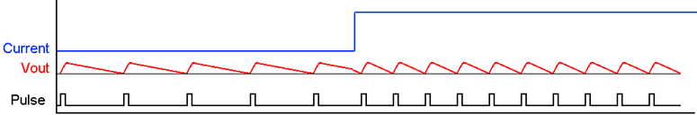
Pulse Density and Current Flow
The benefit of sampling continuously is evident: even the shortest device activity that consumes energy contributes to the overall recorded energy. No shunt-based measurement system can achieve this.
EnergyTrace Technology is available as part of Texas Instrument's Code Composer Studio IDE for MSP432 microcontrollers. During debugging of an application, additional windows are available if the hardware supports EnergyTrace Technology.
By default, the EnergyTrace Technology feature is disabled in the Code Composer Studio Preferences. To enable it, go to Window → Preferences → Code Composer Studio → Advanced Tools → EnergyTrace™ Technology (see (#SLAU1578796765)).
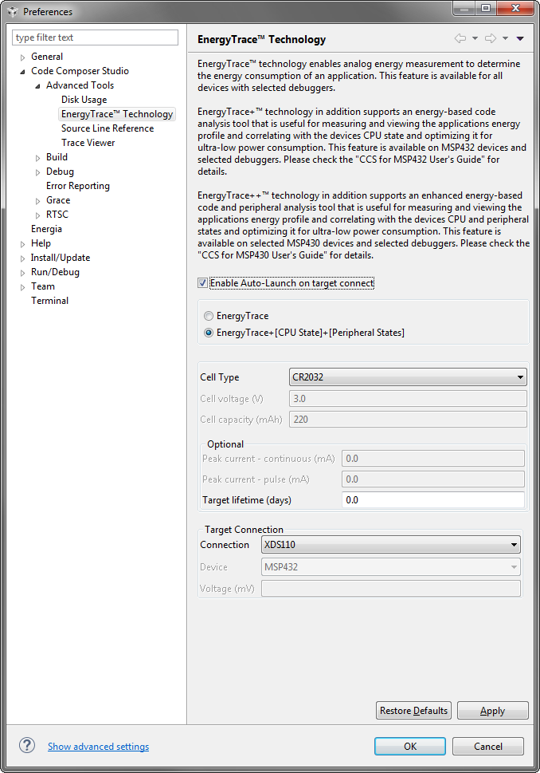
EnergyTrace™ Technology Preferences
Two capture modes are supported.
Use the radio button to select the mode to enable when a debug session is launched. If an MSP432 device does not support device state capturing, the selection is ignored and Code Composer Studio starts in EnergyTrace mode.
While a debug session is active, click the icon in the Profile window to switch between the modes.
NOTE:If the EnergyTrace Technology windows are not opened when a debug session starts, verify the following items:
EnergyTrace Technology can be controlled using the control bar icons in the Profile window (see (#SLAU1578796939)). (#SLAU1574097) describes the function of each of these buttons.
EnergyTrace™ Technology Control Bar
EnergyTrace™ Technology Control Bar Icons
|
|
Enable or disable EnergyTrace Technology. When disabled, icon turns gray. |
|
|
Set capture period: 5 sec, 10 sec, 30 sec, 1 min, or 5 min. Data collection stops after time has elapsed. However, the program continues to execute until the Pause button in the debug control window is clicked. |
|
|
Save profile to project directory. When saving an EnergyTrace+ profile, the default filename will start with "EnergyTrace_D" followed by a timestamp. When saving an EnergyTrace profile, the default filename will start with "EnergyTrace" followed by a timestamp. |
|
|
Load previously saved profile for comparison. |
|
|
Restore graphs or open Preferences window. |
|
|
Switch between EnergyTrace+ mode and EnergyTrace mode |
When debugging devices with built-in EnergyTrace+ support, the EnergyTrace+ mode gives information about both energy consumption and the internal state of the target microcontroller. The following windows are opened during the startup of a debug session (also see (#SLAU15787961033)):
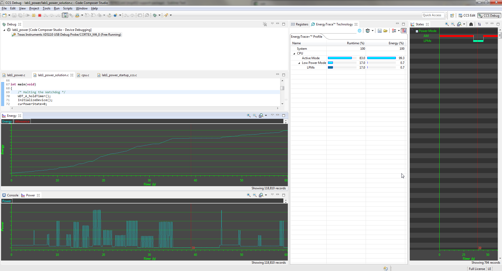
Debug Session With EnergyTrace+ Graphs
The Profile window (see (#SLAU15787961051)) is the control interface for EnergyTrace+. It can be used to set the capturing time or to save the captured data for later reference. The Profile window also displays a compressed view of the captured data and allows comparison with previous data.
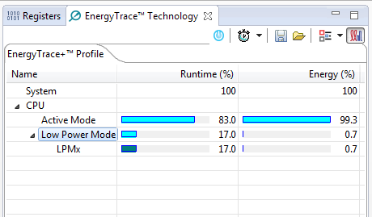
Profile Window
The Profile window enables a quick overview of the resource use of the profiled application.
The States window (see (#SLAU15787961103)) shows the real-time trace of the target microcontroller's internal states during the captured session. State information includes the Power Modes, on and off state of peripheral modules and the state of the system clocks.
(#SLAU15787961103) shows a device going into a Low Power mode then back to Active Mode. The States window allows a direct verification of whether or not the application exhibits the expected behavior; for example, that a peripheral is disabled after a certain activity.
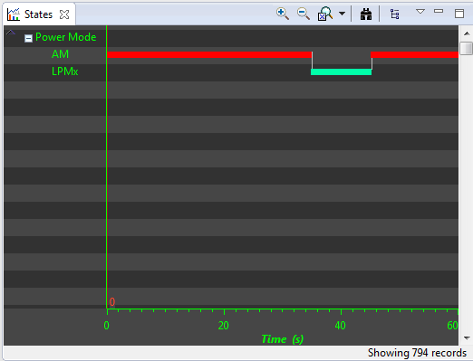
States Window
The Power window (see (#SLAU15787961117)) shows the dynamic power consumption of the target over time. The current profile is plotted in light blue color, while a previously recorded profile that has been reloaded for comparison is plotted in yellow color.
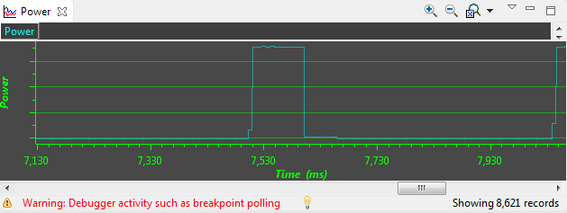
Power Window
The Energy window (see (#SLAU15787961133)) shows the accumulated energy consumption of the target over time. The current profile is plotted in light blue color, while a previously recorded profile that has been reloaded for comparison is plotted in yellow color.
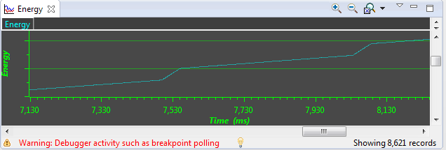
Energy Window
NOTE:During the capture of the internal states, the target microcontroller is constantly accessed by the JTAG or Spy-Bi-Wire debug logic. These debug accesses consume energy; therefore, no absolute power numbers are shown on the Power and Energy graph vertical axis. To see absolute power numbers of the application, it is recommended to use the EnergyTrace mode in combination with the Free Run option. In this mode, the debug logic of the target microcontroller is not accessed while measuring energy consumption.
This mode allows a standalone use of the energy measurement feature with MSP432 microcontrollers that do not have built-in EnergyTrace+ support. It can also be used to verify the energy consumption of the application without debugger activity. If the EnergyTrace mode is selected in the Preferences window, the following windows open when a debug session starts (also see (#SLAU15787961182)):
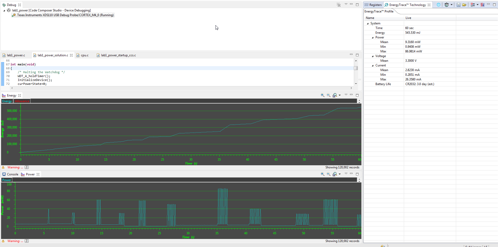
Debug Session With EnergyTrace Graphs
In the EnergyTrace mode, the Profile window shows statistical data about the application that has been profiled (see (#SLAU15787961229)). The following parameters are shown:
NOTE:
The formula to calculate the battery life time assumes an ideal 3-V battery and does not account for temperature, aging, peak current, and other factors that could negatively affect battery capacity. It should also be noted that changing the target voltage (for example, from 3.6 V to 3 V) might cause the analog circuitry to behave differently and operate in a more or less efficient state, hence reducing or increasing energy consumption. The value shown in the Profile window cannot substitute measurements on real hardware.
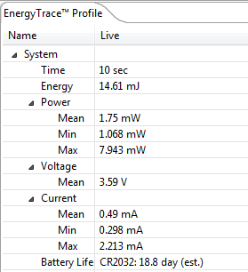
EnergyTrace Profile Window
The Power window (see (#SLAU15787961243)) shows the dynamic power consumption of the target over time. The current profile is plotted in light blue color, while a previously recorded profile that has been reloaded for comparison is plotted in yellow color.
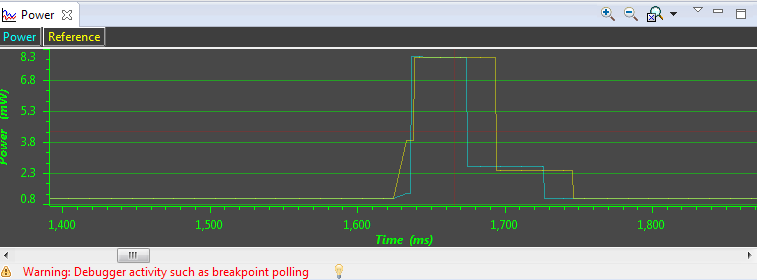
Zoom Into Power Window
The Energy window (see (#SLAU15787961259)) shows the accumulated energy consumption of the target over time. The current profile is plotted in light blue color, while a previously recorded profile that has been reloaded for comparison is plotted in yellow color.
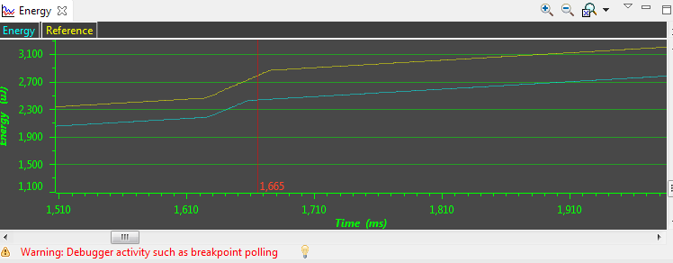
Zoom Into Energy Window
NOTE:During program execution through the debugger's view Resume button, the target microcontroller is constantly accessed by the JTAG or Spy-Bi-Wire protocol to detect when a breakpoint has been hit. Inevitably, these debug accesses consume energy in the target domain and change the result shown in both Energy and Power graphs. To see the absolute power consumption of an application, it is recommended to use the Free Run mode. In Free Run mode, the debug logic of the target microcontroller is not accessed. See (#SLAU15787961295) for an example of the effect of energy consumption coming from debug accesses. The yellow profile was recorded in Resume mode, and the green profile was recorded in Free Run mode.
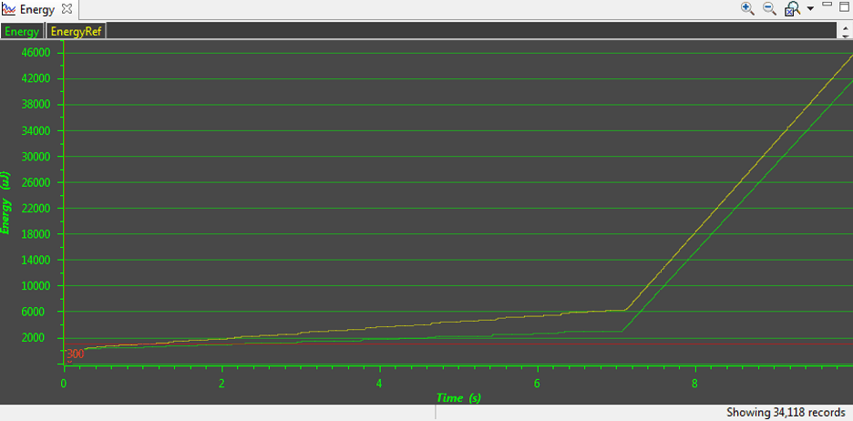
Energy Profile of the Same Program in Resume (Yellow Line) and Free Run (Green Line)
The EnergyTrace Technology can be used in various ways. One is to check the device's internal states over time against the expected behavior and correct any misbehavior; for example, due to a peripheral not being disabled after periodic usage. Another way is to compare the captured data against previously captured data. The previously captured data is called the reference data in the following discussion.
After the reference data has been loaded, a yellow reference graph is plotted in the Power and Energy windows. The Power window shows the power profiles of both data sets over time and is useful to determine any changes in static power consumption; for example, due to use of a deeper low-power mode or disabling of unused peripherals. It also shows how the dynamic power consumption has changed from one measurement to the other; for example, due to ULP Advisor hints being implemented. The Energy window shows the accumulated energy consumption over time and gives an indication which profile is more energy efficient.
In the EnergyTrace+ mode, the condensed view of both captured and reference data is displayed in the Profile window (see (#SLAU15787961334)). You can quickly see how the overall energy consumption and use of power modes, peripherals, and clocks changed between both capture sessions. In general, parameters that have become better are shown with a green bar, and parameters that have become worse are shown with a red bar. For example, time spent in Active Mode is generally seen as negative. Hence, if a code change makes the application spend less time in active mode, the negative delta is shown as a green bar, and the additional time spent in a low-power mode is shown as a green bar.
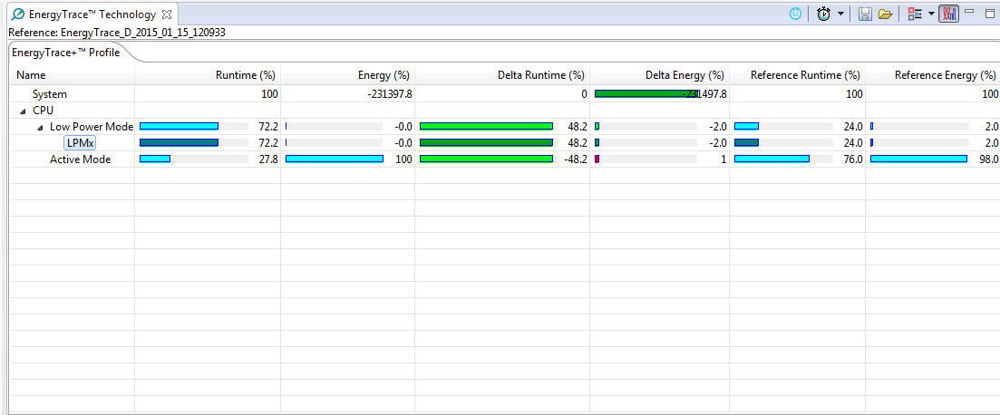
Comparing Profiles in EnergyTrace+ Mode
In the EnergyTrace mode, no States information is available to generate an exhaustive report. However, the overall energy consumed during the measurement is compared and, with it, the Min, Mean, and Max values of power and current. Parameters that have become better are shown with a green bar, and parameters that have become worse are shown with a red bar (see (#SLAU15787961354)).
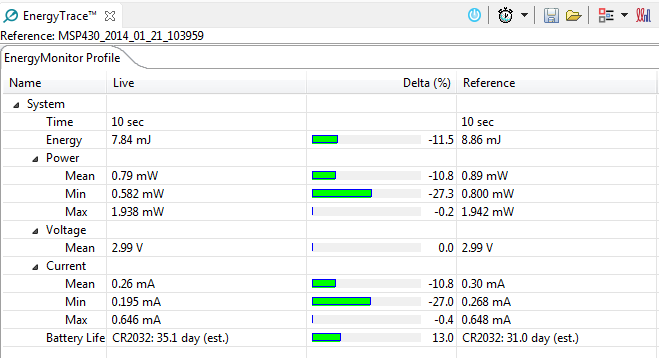
Comparing Profiles in EnergyTrace Mode
The delta bars are drawn linearly from 0% to 50%. Deltas larger than 50% do not result in a larger delta bar.
Q: What is the sampling frequency of EnergyTrace+ technology?
Updated the answer to the first question in (#SLAU1571290)A: The sampling frequency depends on the debugger and the selected debug protocol and its speed setting. It typically ranges from 1 kHz (for example, when using the Spy-Bi-Wire interface set to SLOW) up to 3.2 kHz (for example, when using the JTAG interface set to FAST). The debugger polls the state information of EnergyTrace+ from the device status information. Depending on the sampling frequency, a short or fast duty cycle active peripheral state may not be captured on the State graph. In addition, the higher sampling frequency affects the device energy consumption under EnergyTrace.
Added the second question in (#SLAU1571290)Q: What is the sampling frequency of EnergyTrace technology?
A: The sampling frequency to measure the energy consumption is the same independent of which debug protocol or speed and is approximately 4.2 kHz in Free Run mode.
Q: My Power graph seems to include noise. Is my board defective?
A: The power values shown in the Power graph are derived (that is, calculated) from the accumulated energy counted by the measurement system. When the target is consuming little energy, a small number of energy packets over time are supplied to the target, and the software needs to accumulate the dc-dc charge pulses over time before a new current value can be calculated. For currents under 1 µA, this can take up to one second, while for currents in the milliamp range, a current can be calculated every millisecond. Additional filtering is not applied so that detail information is not lost. Another factor that affects the energy (and with it, the current) that is consumed by the target is periodic background debug access during normal code execution, either through capturing of States information or through breakpoint polling. Try recording in Free Run mode to see a much smoother Power graph.
Q: I have a code that repeatedly calls functions that have the same size. I would expect the function profile to show an equal distribution of the run time. In reality, I see some functions having slightly more run time than expected, and some functions slightly less.
A: During program counter trace, various factors affect the number of times a function is detected by the profiler over time. The microcontroller code could benefit from the internal cache, thus executing some functions faster than others. Another influencing factor is memory wait states and CPU pipeline stalls, which add time variance to the code execution. An outside factor is the sampling frequency of the debugger itself, which normally runs asynchronous to the microcontroller's code execution speed, but in some cases shows overlapping behavior, which also results in an unequal function run time distribution.
Q: My profile sometimes includes an <Undetermined> low-power mode, and there are gaps in the States graph Power Mode section. Where does the <Undetermined> low-power mode originate from?
A: During transitions from active mode to low-power mode, internal device clocks are switched off, and occasionally the state information is not updated completely. This state is displayed as <Undetermined> in the Profile window, and the States graph shows a gap during the time that the <Undetermined> low-power mode persists. The <Undetermined> state is an indication that your application has entered a low-power mode, but which mode cannot be accurately determined. If your application is frequently entering low-power modes, the <Undetermined> state will probably be shown more often than if your application only rarely uses low-power modes.
Q: When capturing in EnergyTrace mode, the min and max values for power and current show deviation, even though my program is the same. I would expect absolutely the same values.
A: The energy measurement method used on the hardware counts dc-dc charge pulses over time. Energy and power are calculated from the energy over time. Due to statistical sampling effects and charge and discharge effects of the output voltage buffer capacitors, it is possible that minimum and maximum values of currents vary by some percent, even though the program is identical. The captured energy, however, should be almost equal (in the given accuracy range).
Q: What are the influencing factors for the accuracy of the energy measurement?
A: The energy measurement circuit is directly supplied from the USB bus voltage, and thus it is sensitive to USB bus voltage variations. During calibration, the energy equivalent of a single dc-dc charge pulse is defined, and this energy equivalent depends on the USB voltage level. To ensure a good repeatability and accuracy, power the debugger directly from an active USB port, and avoid using bus-powered hubs and long USB cables that can lead to voltage drops, especially when other consumers are connected to the USB hub. Furthermore the LDO and resistors used for reference voltage generation and those in the calibration circuit come with a certain tolerance and ppm rate over temperature, which also influences accuracy of the energy measurement.
Q: I am trying to capture in EnergyTrace+ mode or EnergyTrace mode with a MSP432 device that is externally powered, but there is no data shown in the Profile, Energy, Power and States window.
A: Both EnergyTrace+ mode and EnergyTrace mode require the target to be supplied from the debugger. No data can be captured when the target microcontroller is externally powered.
Q: I cannot measure LPM currents when I am capturing in EnergyTrace+ mode. I am expecting a few microamps but measure more than 150 µA.
A: Reading digital data from the target microcontroller consumes energy in the JTAG domain of the microcontroller. Hence, an average current of approximately 150 µA is measured when connecting an ampere meter to the device power supply pins. If you want to eliminate energy consumption through debug communication, switch to EnergyTrace mode, and let the target microcontroller execute in Free Run mode.
Q: My LPM currents seem to be wrong. I am expecting a few microamps, but measure more, even in Free Run mode or when letting the device execute without debug control from an independent power supply.
A: The most likely cause of this extra current is improper GPIO termination, as floating pins can lead to extra current flow. Also check the JTAG pins again, especially when the debugger is still connected (but idle), as the debugger output signal levels in idle state might not match how the JTAG pins have been configured by the application code. This could also lead to extra current flow.
Q: When I start the EnergyTrace+ windows through View → Other → EnergyTrace before launching the debug session, data capture sometimes does not start.
A: Enable EnergyTrace through Window → Preferences → Code Composer Studio → Advanced Tools → EnergyTrace™ Technology. When launching a debug session, the EnergyTrace+ windows automatically open, and data capture starts when the device executes. If you accidentally close all EnergyTrace+ windows during a debug session, you can reopen them through View → Other → EnergyTrace.